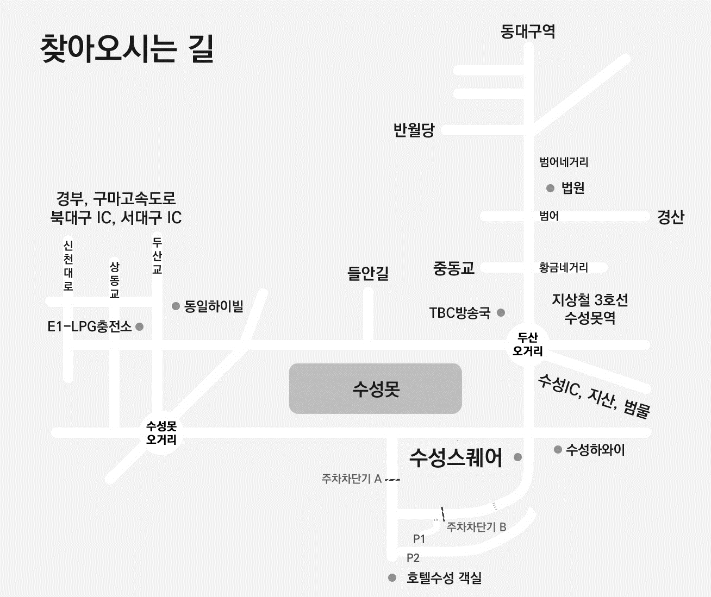
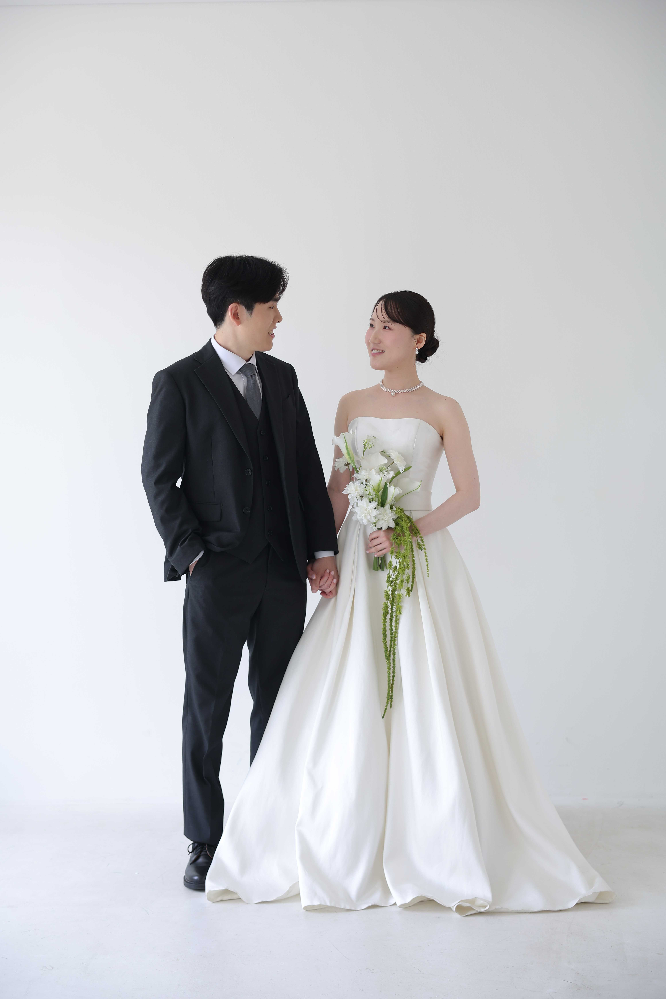
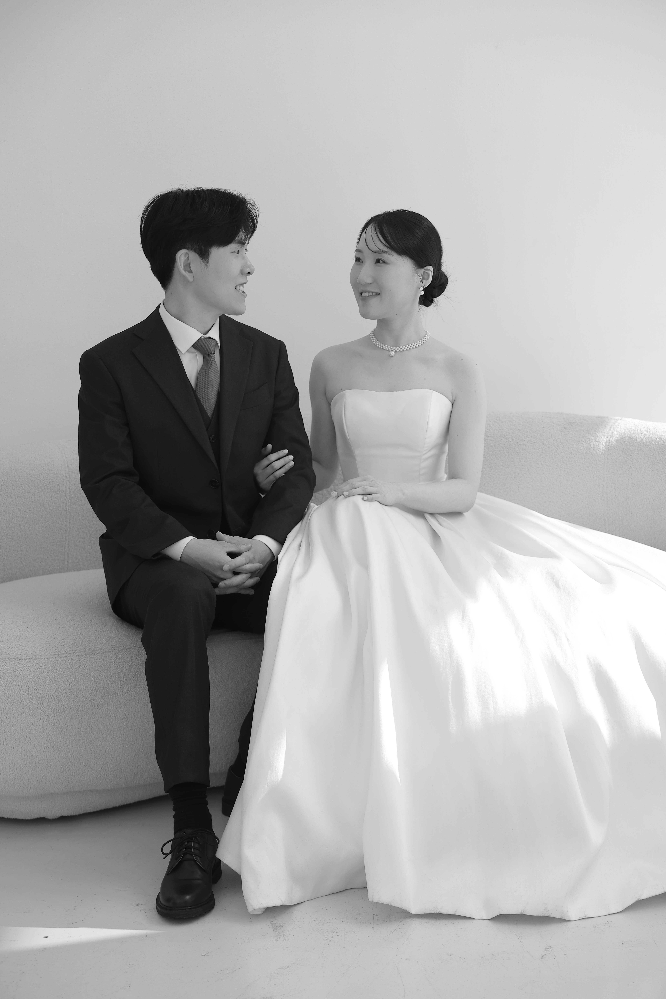
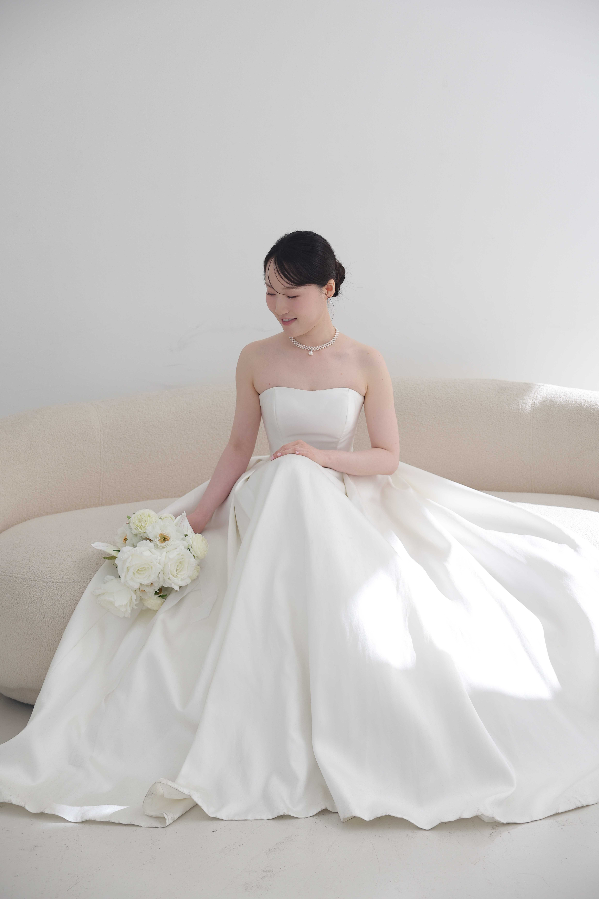
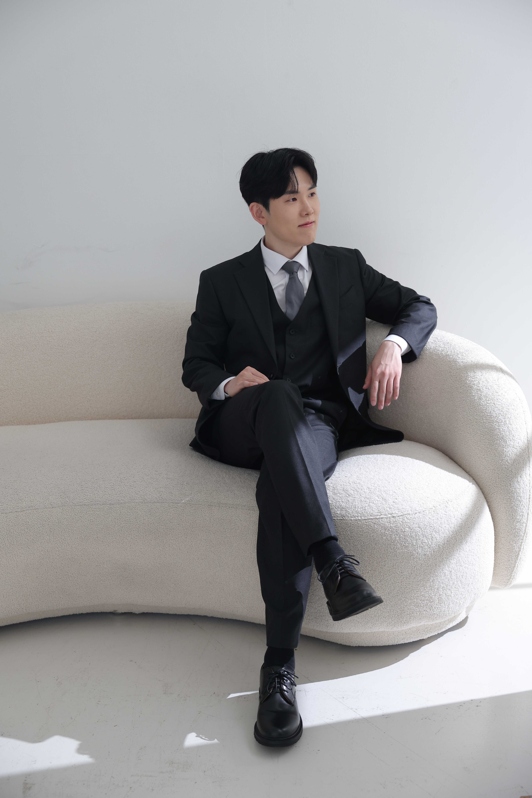
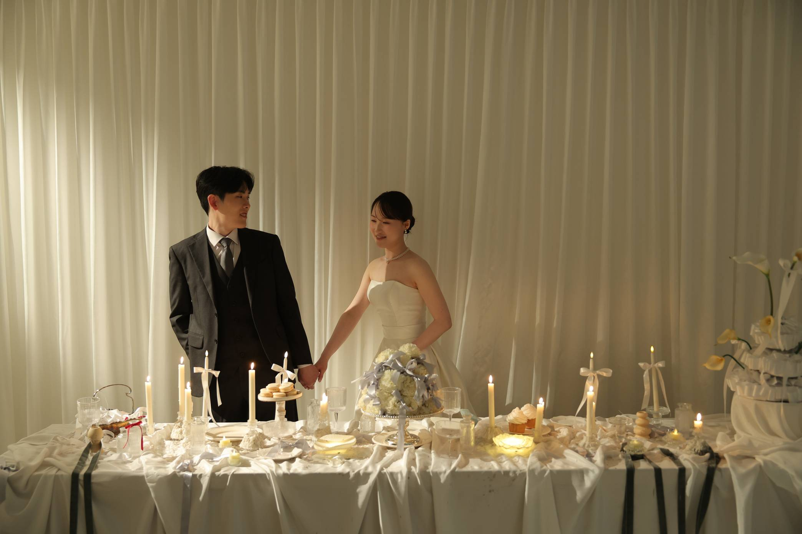
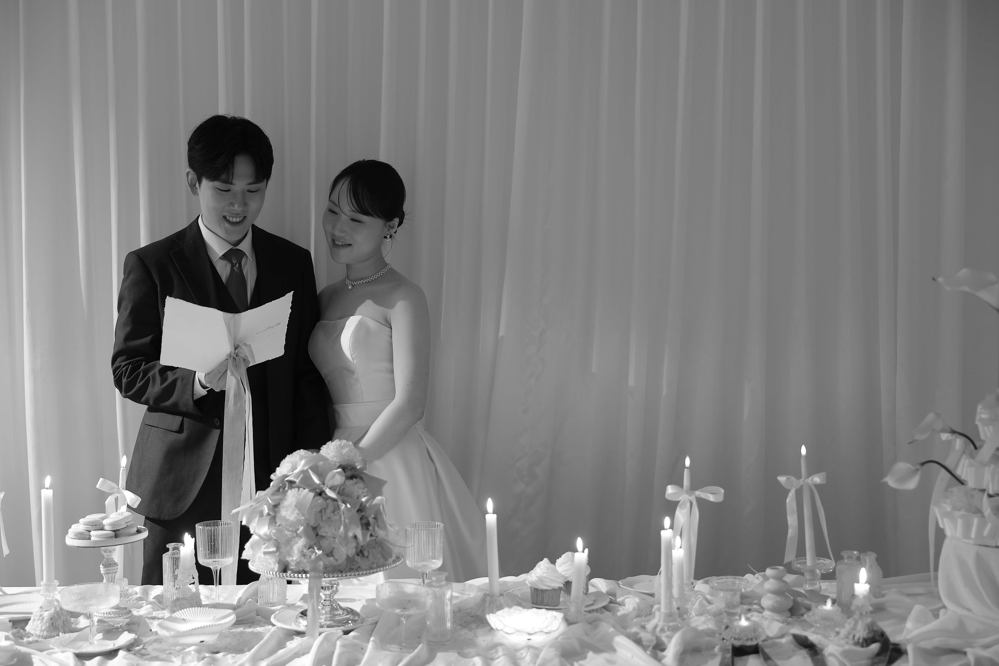

우리 두 사람 결혼합니다
구재관 ♥ 이채희
2026년 11월 14일 토요일 오후 5시 50분
호텔수성 수성스퀘어 2층 아이비홀
WEDDING DAY
우리 두 사람 결혼합니다
구재관 ♥ 이채희
2026년 11월 14일 토요일 오후 5시 50분
호텔수성 수성스퀘어 2층 아이비홀
Invitation
Date
2026.11.14 (토) 오후 5시 50분
Location
호텔수성 수성스퀘어 2층 아이비홀
대구 수성구 용학로 92-4
(주차 1,400대 가능, 3시간 무료)

동대구IC에서 오시는 길
동대구IC에서 두산오거리 방향으로 12KM (35분 소요)
북대구IC에서 오시는 길
북대구IC에서 가창방면으로 14KM(20분 소요)
수성IC에서 오시는 길
수성IC에서 범물방향으로 8KM(15분 소요)
역에서 오시는 길
▪ 동대구역 - 호텔과의 거리 : 총 6.4KM
택시 - 소요시간 약 20분 (요금 10,000원 정도)
버스 - 401, 814 (TBC방송국 하차, 도보 15분 정도)
▪ 대구역 - 호텔과의 거리 : 총 9.5KM
택시 - 소요시간 약 30분 (요금 12,000원 정도)
버스 - 401, 410 → 신천역 4번 출구 → 불교한방병원 하차 (도보 10분 정도)
▪ 동대구 복합환승센터 - 호텔과의 거리: 총 6.3KM
택시 - 소요시간 약 20분 (요금 10,000원 정도)
버스 - 909 → 신천치안센터 하차(환승) → 410 (호텔수성건너 하차)






Account
참석이 어려우신 분들을 위해 기재했습니다.
너그러운 마음으로 양해 부탁드립니다.